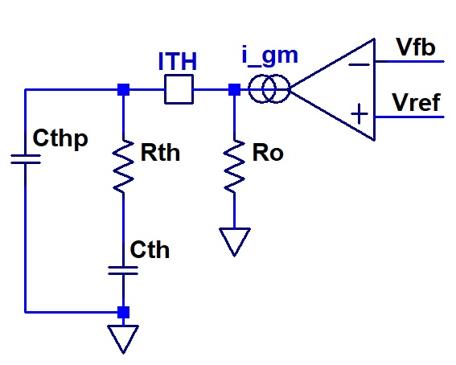

Analog Engineering Hub
Back to Tools
Type II Compensator

R_TH (kΩ):
\( f_{z1} = \frac{1}{2\pi R_{TH} C_{TH}}, f_{p2} = \frac{C_{TH} + C_{THP}}{2\pi R_{TH} C_{TH} C_{THP}} \)
C_TH (pF):
\( f_{z1} = \frac{1}{2\pi R_{TH} C_{TH}}, f_{p0} = \frac{1}{2\pi R_o C_{TH}}, f_{p2} = \frac{C_{TH} + C_{THP}}{2\pi R_{TH} C_{TH} C_{THP}} \)
C_THP (pF):
\( f_{p2} = \frac{C_{TH} + C_{THP}}{2\pi R_{TH} C_{TH} C_{THP}} \)
gm (mS):
\( \text{Gain} = 20 \log_{10}(g_m R_o) \)
R_o (kΩ):
\( \text{Gain} = 20 \log_{10}(g_m R_o), f_{p0} = \frac{1}{2\pi R_o C_{TH}} \)
X-Axis Min (kHz):
X-Axis Max (kHz):
Reset
Transfer Function:
\( A(s) = \)
Zero:
0
kHz, Pole:
0
kHz
Phase Boost:
0